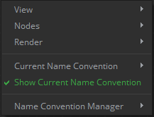
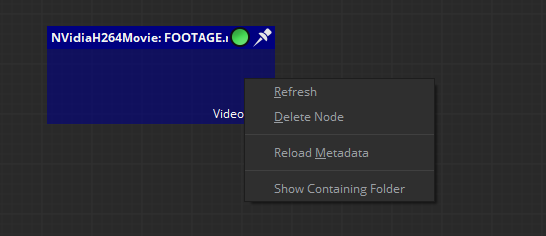
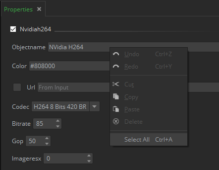
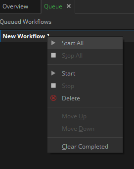
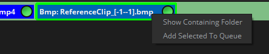

|
<< Click to Display Table of Contents >> Navigation: Main menu > Contextual menus |
By right clicking with your mouse or pen you will find the following contextual menus in certain interface tabs.
Note: Many of the contextual menus in Mistika Workflows are shortcuts to other menus already present in other menus , and their particular functions are not explained here but in their own chapters.
Nodegraph Contextual Menu: It will give you access to these options: View, Nodes, Render, Current Name Convention, Show Current Name Convention and Name Convention Manager features.

By clicking on Show containing Folder the user may also open the folder where the input files are located. Or in case of task nodes to open the selected folder for its output files.



